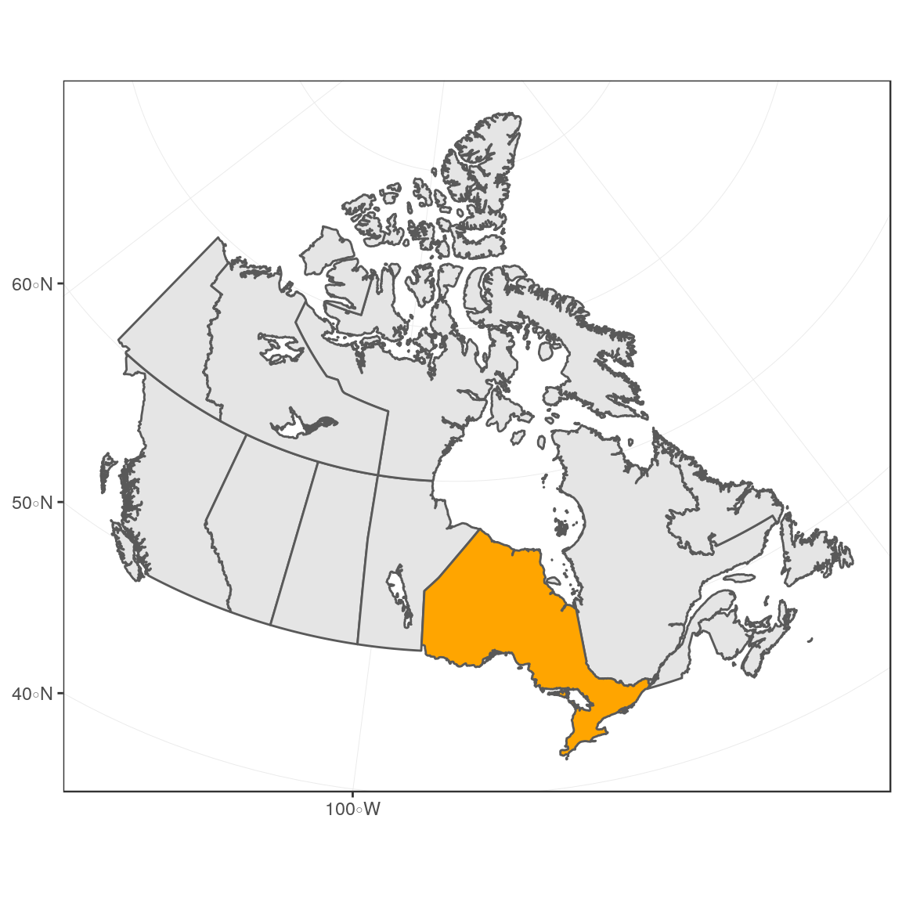
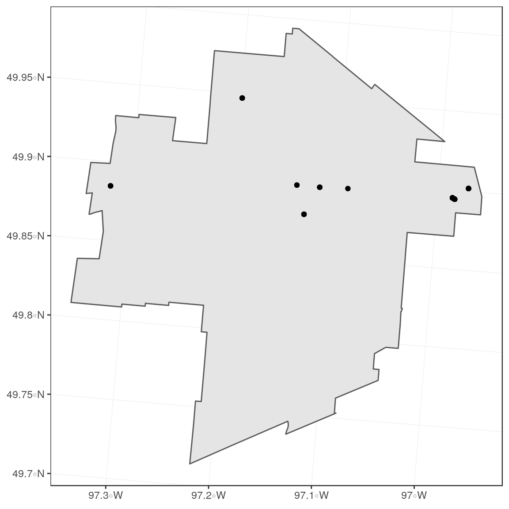
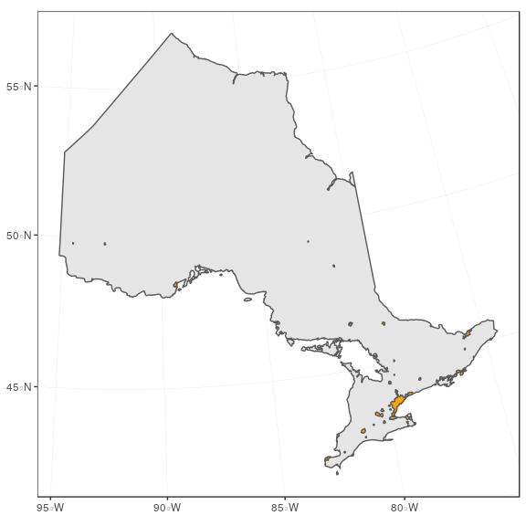
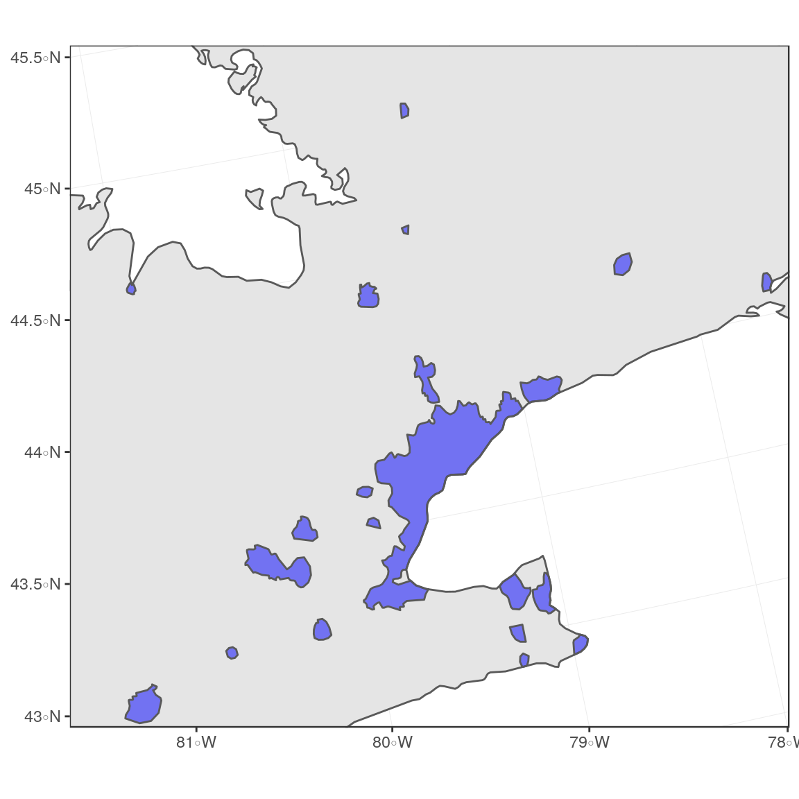
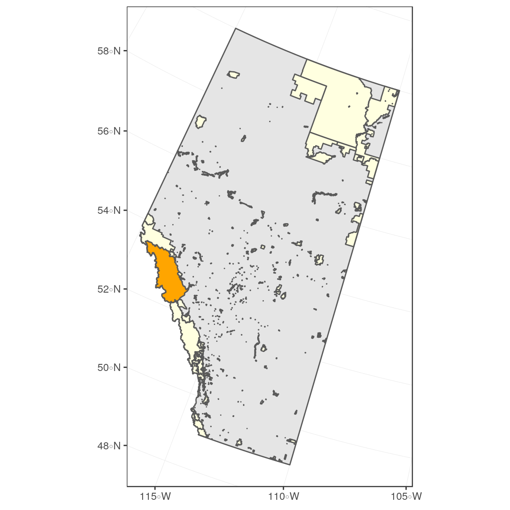
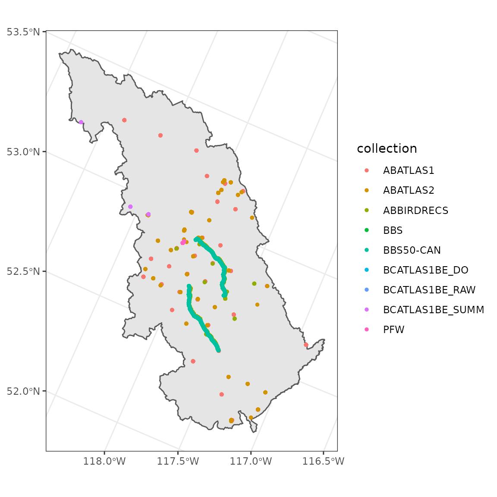

Using spatial data to filter observations
2019-04-04
Source:vignettes/region-spatial.Rmd
region-spatial.RmdIn this article we’ll go over how to use spatial data to more precisely define regional filters. Often you might be interested only in observations which fall within a very specific geographic area. While the nc_data_dl() function cannot take a shapefile as an argument, you can use regional codes to filter your data, or you can use shape files to specify either the utm_squares or the bbox (bounding box) surrounding your area of interest. After the download, you can then trip the resulting observations to your original shape file.
Setup
We’ll be using the tidyverse packages dplyr and ggplot2 for data manipulation and plotting, respectively. We’ll use the gridExtra to combine figures. We’ll use the sf package for working with spatial data, and the rnaturalearth package to get example spatial data.
library(naturecounts)
library(dplyr)
library(ggplot2)
library(gridExtra)
library(sf)
library(rnaturalearth)If you have your own spatial data files that you would like to read into R, we recommend reading the Reading, Writing and Converting Simple Features Vignette from the sf website.
First we’ll get some spatial objects for our explorations from the rnaturalearth package. A map of Canada and a map of Ontario, both transformed from CRS 4326 (unprojected lat/lon) to 3347 (NAD83 Statistics Canada).
na <- ne_countries(continent = "north america", returnclass = "sf") %>%
st_transform(3347)
canada <- ne_states(country = "canada", returnclass = "sf") %>%
st_transform(3347)
ontario <- ne_states(country = "Canada", returnclass = "sf") %>%
filter(name == "Ontario") %>%
st_transform(3347)
manitoba <- ne_states(country = "Canada", returnclass = "sf") %>%
filter(name == "Manitoba") %>%
st_transform(3347)ggplot() +
theme_bw() +
geom_sf(data = canada) + # Map of Canada
geom_sf(data = ontario, fill = "orange") # Map of OntarioAlternatively specify the groups inside ggplot()
ggplot() +
theme_bw() +
geom_sf(data = canada, aes(fill = name == "Ontario"), show.legend = FALSE)+
scale_fill_manual(values = c("grey90", "orange"))
By Province/State
Unless you’re downloading hundreds of thousands of records, it is often faster to download all the data from a region and then filter to match a shape file, rather than sending detailed filters to the server. This is because performing a detailed filtering a subset of the data locally is much faster than performing the same action on the entire database on the server (remotely).
For example, if you wanted to collect all public observations in Winnipeg, Manitoba, it would be easiest to first download all observations for Manitoba.
Now we’ll get a polygon representing Winnipeg, MB.
winnipeg <- st_read("https://data.winnipeg.ca/api/geospatial/jx93-sett?method=export&format=GeoJSON") %>%
st_transform(3347)## Reading layer `OGRGeoJSON' from data source `https://data.winnipeg.ca/api/geospatial/jx93-sett?method=export&format=GeoJSON' using driver `GeoJSON'
## Simple feature collection with 1 feature and 1 field
## geometry type: MULTIPOLYGON
## dimension: XY
## bbox: xmin: -97.34915 ymin: 49.71356 xmax: -96.95653 ymax: 49.99401
## epsg (SRID): 4326
## proj4string: +proj=longlat +datum=WGS84 +no_defsFinally we’ll filter our observations to those that overlap the parks.
obs_sf <- st_as_sf(obs, coords = c("longitude", "latitude"), crs = 4326) %>%
st_transform(3347) %>%
st_join(distinct(winnipeg), left = FALSE)
ggplot() +
theme_bw() +
geom_sf(data = winnipeg) +
geom_sf(data = obs_sf)
By UTM Squares
In the following example, let’s assume that you wish to concentrate only on observations from urban areas in Ontario, Canada.
We’ll download that data with the rnaturalearth package and save it to the working directory (“.”)
Now that we’ve saved it, we can load it for use.
## OGR data source with driver: ESRI Shapefile
## Source: "/home/steffi/Projects/Business/BSC/NatureCounts/naturecounts/vignettes/region-spatial_files", layer: "ne_10m_urban_areas"
## with 11878 features
## It has 4 fields
## Integer64 fields read as strings: scalerankFirst we’ll transform it to the 3347 CRS and clip the urban areas to match the borders of Ontario (st_insection(spatial1, spatial2)). Here we only care about the geometry of Ontario, not any other data (st_geometry(ontario)).
## Warning: attribute variables are assumed to be spatially constant throughout all geometries
Now to filter your observations to urban areas, the first step would be to get all the UTM squares which overlap these areas. We can do this collecting the UTM squares with meta_utm_squares() and then filtering these to include only those that overlap these urban areas.
Once again, we only care about the actual geometries of urban_ontario, not about any of it’s features, so we use distinct() to return distinct polygons without any other columns. Finally we use unique() at the end to remove any duplicates (i.e. utm_squares that overlap more than 1 urban polygon. Note that you must use unique() and not distinct() (which works on regular data frames, but here removes all data attributes).
utm_on <- meta_utm_squares() %>%
filter(statprov_code == "ON") %>%
st_transform(3347) %>% # Transform to match urban CRS
st_join(., distinct(urban_ontario), left = FALSE) %>%
unique()
ggplot() +
theme_bw() +
geom_sf(data = ontario) +
geom_sf(data = utm_on, fill = "red") +
geom_sf(data = urban_ontario, fill = "blue", alpha = 0.5)
It’s a bit tricky to see exactly what’s going on, so let’s zoom in a bit.
However, it’s also a bit tricky to zoom when we’re using a non-lat/lon CRS because the units are unintuitive. So let’s specify the limits we want, then transform them in the CRS we’re using and use that to set our limits.
zoom <- data.frame(lon = c(-81, -78, -81, -78),
lat = c(43, 43, 45, 45)) %>%
st_as_sf(coords = c("lon", "lat"), crs = 4326) %>%
st_transform(3347) %>%
st_bbox()
zoom## xmin ymin xmax ymax
## 7067507.7 830951.5 7352759.4 1101349.9For convinience, we’ll use the grid.arrange() function from the gridExtra to line up the figures side-by-side so we can get a really good look at what we’re doing.
grid.arrange(
ggplot() +
theme_bw() +
geom_sf(data = ontario) +
geom_sf(data = urban_ontario, fill = "blue", alpha = 0.5) +
coord_sf(xlim = zoom[c(1,3)], ylim = zoom[c(2,4)]),
ggplot() +
theme_bw() +
geom_sf(data = ontario) +
geom_sf(data = utm_on, fill = "red", alpha = 0.5) +
geom_sf(data = urban_ontario, fill = "blue", alpha = 0.5) +
coord_sf(xlim = zoom[c(1,3)], ylim = zoom[c(2,4)]),
nrow = 1)
So now we can see that the utm_squares we’ve selected overlap all our urban areas. Now we can download the observations for all of these areas:
obs <- nc_data_dl(region = list(utm_squares = utm_on$utm_square), verbose = FALSE)Finally, we do clip the resulting observations to the exact urban areas:
obs_sf <- st_as_sf(obs, coords = c("longitude", "latitude"), crs = 4326) %>%
st_transform(crs = 3347) %>%
st_join(distinct(urban_ontario), left = FALSE)
ggplot() +
theme_bw() +
geom_sf(data = ontario) +
geom_sf(data = urban_ontario, fill = "blue", alpha = 0.5) +
geom_sf(data = obs_sf, size = 1) +
coord_sf(xlim = zoom[c(1,3)], ylim = zoom[c(2,4)])
However, sending large lists of UTM squares can be slow, so consider using a bounding box and filtering your downloaded data after the fact.
By Bounding Box
In this example, we’ll gather all observations for Jasper National Park in Alberta, Canada.
First we’ll download and extract the shapefiles available from the Alberta Parks website.
url <- "https://www.albertaparks.ca/media/2941843/parks_and_protected_areas_alberta.zip"
download.file(url = url)
unzip("parks_and_protected_areas_alberta.zip")
parks <- st_read("Parks_Protected_Areas_Alberta.shp")## Reading layer `Parks_Protected_Areas_Alberta' from data source `/home/steffi/Projects/Business/BSC/NatureCounts/naturecounts/vignettes/region-spatial_files/Parks_Protected_Areas_Alberta.shp' using driver `ESRI Shapefile'
## Simple feature collection with 477 features and 17 fields
## geometry type: MULTIPOLYGON
## dimension: XY
## bbox: xmin: 170844.3 ymin: 5425575 xmax: 860845.9 ymax: 6659216
## epsg (SRID): NA
## proj4string: +proj=tmerc +lat_0=0 +lon_0=-115 +k=0.9992 +x_0=500000 +y_0=0 +datum=NAD83 +units=m +no_defsNow we’ll get a background map of Alberta and a spatial file of just Jasper.
alberta <- ne_states(country = "Canada", returnclass = "sf") %>%
filter(name == "Alberta") %>%
st_transform(3347)
jasper <- filter(parks, NAME == "Jasper") %>%
st_transform(3347)Let’s see what that all looks like.
ggplot() +
theme_bw() +
geom_sf(data = alberta) +
geom_sf(data = parks, aes(fill = NAME == "Jasper"), show.legend = FALSE) +
scale_fill_manual(values = c("lightyellow", "orange"))
Using a bounding box is a good way to download observations only from the Jasper area. But remember that the bounding box coordinates used by nc_data_dl() are in lat/lon, so we’ll have to back transform.
## xmin ymin xmax ymax
## -119.54484 52.12700 -116.79566 53.48118We can give this directly to our nc_data_dl() function.
Finally we clip the observations to the exact area of Jasper.
obs_sf <- st_as_sf(obs, coords = c("longitude", "latitude"), crs = 4326) %>%
st_transform(3347) %>%
st_join(distinct(jasper), left = FALSE)
ggplot() +
theme_bw() +
geom_sf(data = jasper) +
geom_sf(data = obs_sf, size = 1, aes(colour = collection))